ART PROJECT / 摄影 / 手绘地图 / 文字
旅途中的记录。
和家人一起，把路走进记忆
和家人在各地旅行，总能遇到不同的风景。把路线画下来，把相遇拍下来，也把那些一起走过的片刻留在本子里。
走过的路，慢慢成为一本自己的地图。
第一次长途自驾，去到最南端的西礁岛。旅程里有路过的教堂、跨入新一年的夜晚，也有地图上一个个被记下的名字。
德州的校园、一号公路的海风、路过城市里的大学与书店，都与家人的身影一起进入照片。记录不只是到过哪里，也是在路上如何彼此陪伴。
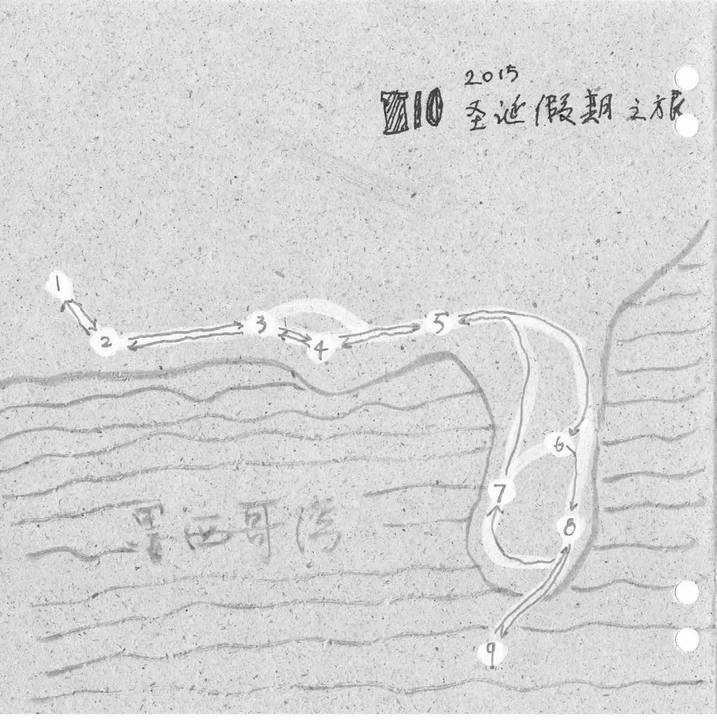
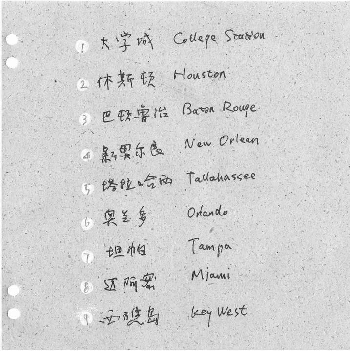

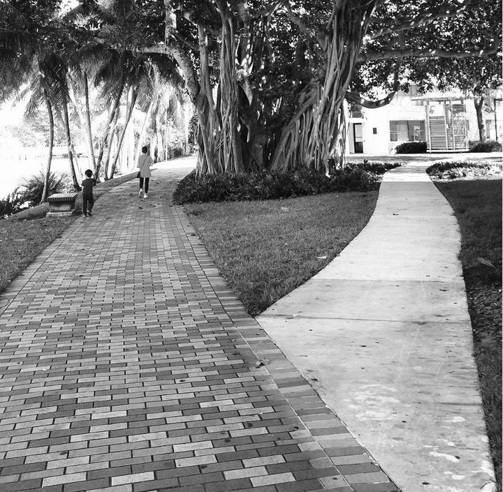
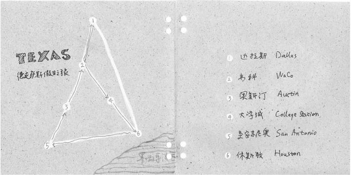
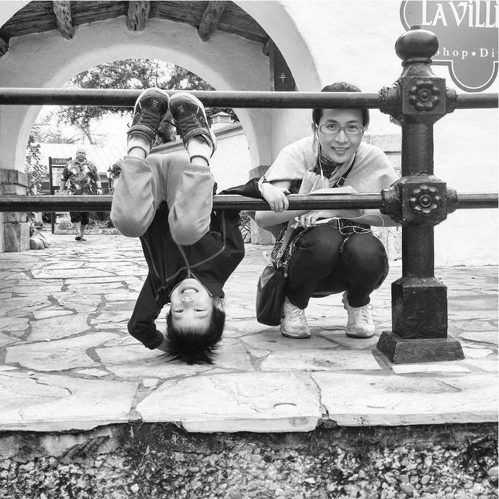
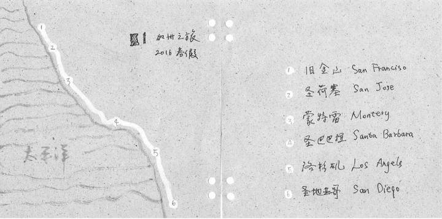
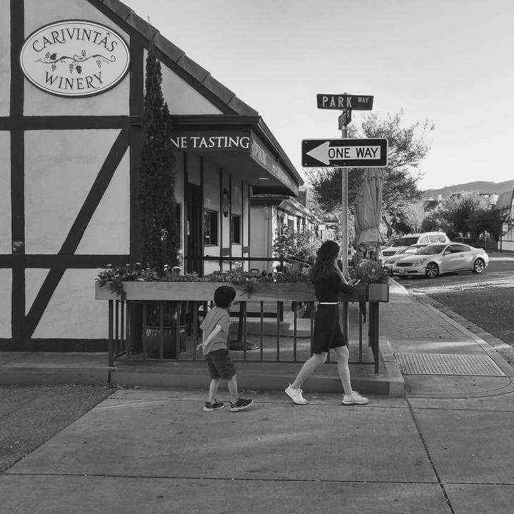
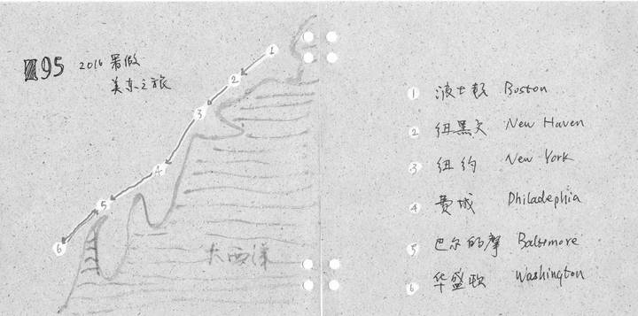
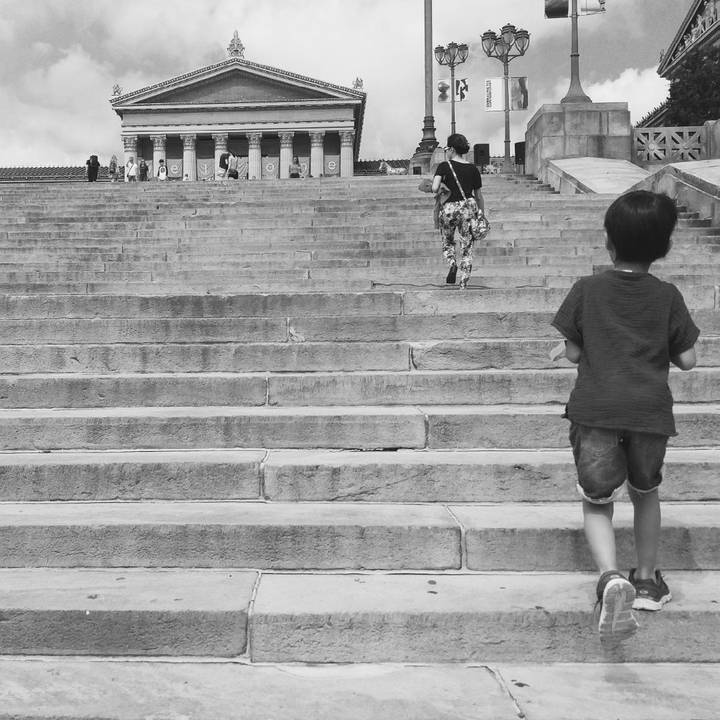
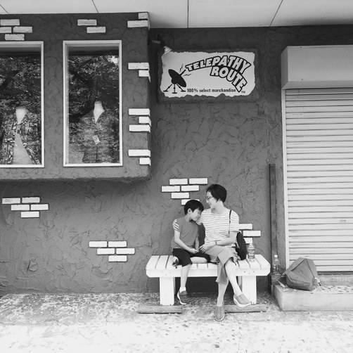
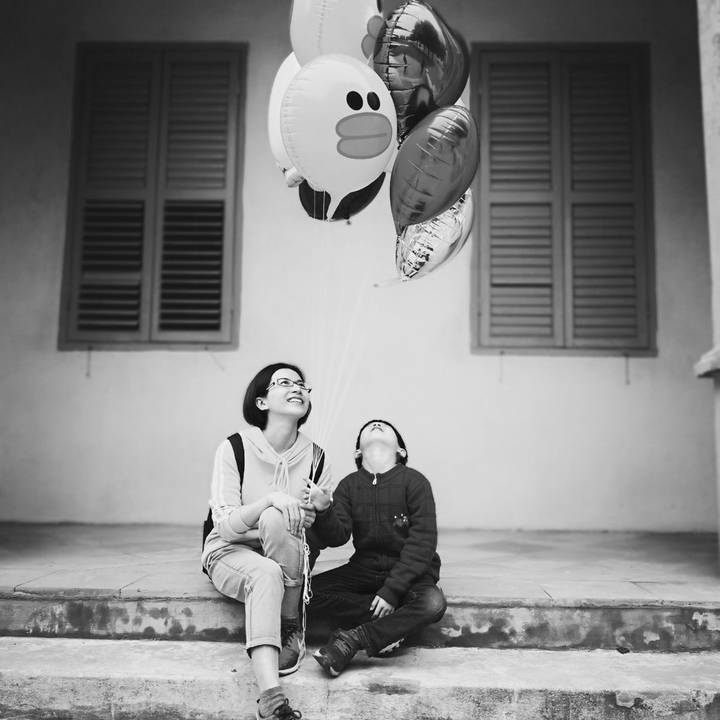
图文整理自《忽独》第一期，影像与原文分别保留作者署名。
停下来，再看一眼。
把旅途装进一本手工本